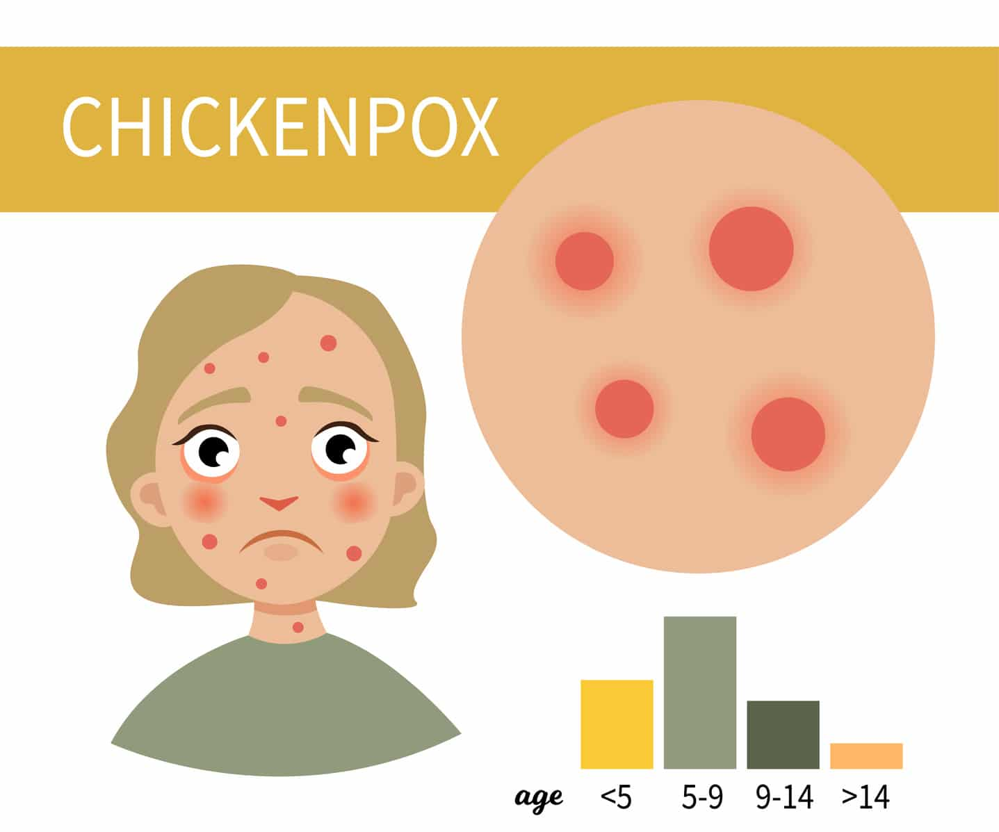

CHICKEN POX

- Spread a thin white cloth on the floor, remove the heavy willow stalks and place it on the bed.
- If you have children, wrap only a thin cloth around the body.
- The elderly should also be wrapped in thin cloth without underwear.
- Irritation can be caused by the deposition of mistletoe on the blisters when lying on the wicker.
- The milk dripping from the blisters deposits on the mistletoe so that they do not spread.
- Householders will tell you not to bathe those who come with measles.
- So daily add turmeric with mistletoe, cool the boiled water and mix it lightly with water and wipe the body.
- If possible do this twice. Doing so will reduce the heat of the blisters and cool the body. Change the mistletoe on the bed every day.
- The mistletoe should be discarded without dust. The bed should be changed daily. The mistletoe should be dusted off.
- Similarly, even if it is a thin cloth, squeeze it well, put it in hot water, squeeze it, dry it and then wear it. People with measles should wash their clothes separately.
- Spicy, salty foods and oily foods should not even catch the eye as measles can be caused by body heat.
- Liquid foods, fruit juices, and cold foods such as juveniles can cure measles quickly.
- Mountain bananas, green bananas and marzipans are ideal.
- Drink two juices daily. If the blisters are very large, you can apply water to cool it.
- Lemon juice, whey, water, pulp, salty drinks and cold foods in fruit juices can help control measles quickly.
- Boil two leaves of mistletoe and give it to drink inside.
- Take a bath when blisters come and go due to smallpox all over the body.
- Then put a handful of mistletoe in a bucket of water before bathing. More camomile.
- Grind turmeric and rub it on the scalp and body, especially where there are blisters, so that the blisters disappear.
- The scars from the blisters will also disappear.